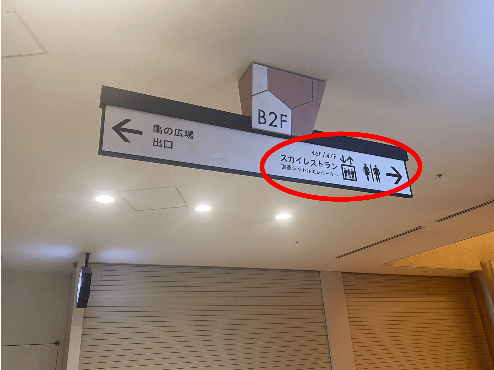
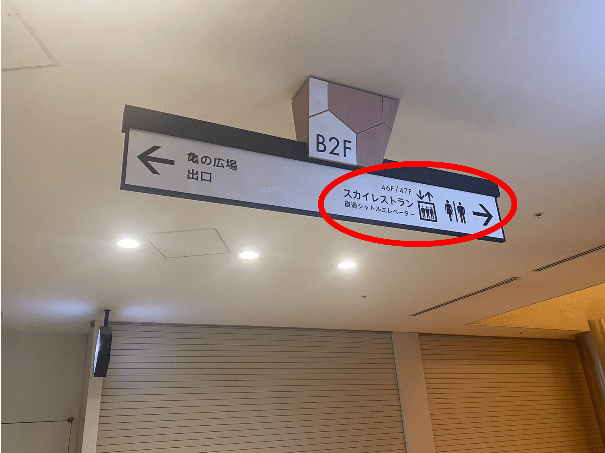

Google Map
新橋駅からの道順
新橋駅からの道順はグランブリエ東京のHPに掲載がございます
ページの中程にあります公共交通でのご来館をクリックして道順をご確認ください
詳しくはこちら
汐留駅からの道順
-
1. 電車を降りたらJR新橋駅方面改札へ向かう
-
2. 階段をあがってJR新橋駅方面改札に向かう

-
3. JR新橋駅方面改札を出る
-
4. 改札を出たら正面の階段をあがる

-
5. 階段を上がったらカレッタ汐留 Cゲートへ向かう

-
6. カレッタ汐留 Cゲートはここです
-
7. カレッタ汐留 Cゲートの自動ドアを通ってビルの中へ
-
8. スカイレストラン 直通シャトルエレベーターの看板に従って進む
 

-
9. SKY RESTAURANTSの看板に従ってさらに進む
-
10. ビアホール だん家の向かいにエレベーターがあります

-
11. エレベーターに乗って46Fまであがる
※会場は47Fですが、直通エレベーターでは46Fまでしか上がれません
-
12. 46Fでエレベーターを降りる

-
13. 奥に進み、左手の階段か右手のエレベーターを使って47Fまでお越しください